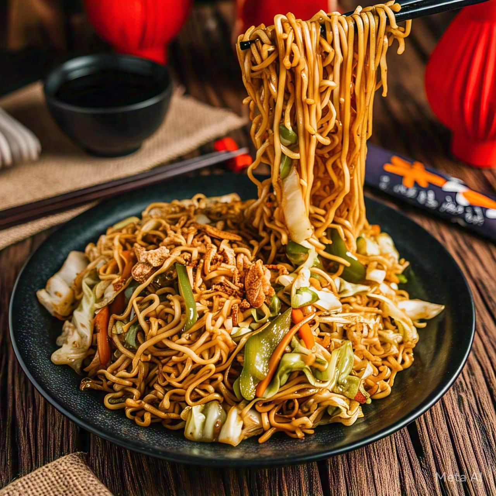

Home
Hakka Noodles

Description
Hakka Noodles is a popular Indo-Chinese dish made with stir-fried noodles, crunchy vegetables and flavorful sauces. It's spicy, savoury and perfect as a quick lunch, dinner or side dish with fried rice or manchurian
Ingredients
- 200g Hakka noodles (or any plain noodles)
- 2 tbsp oil
- 1 onion, thinly sliced
- 1/2 capsicum, thinly sliced
- 1 carrot, sliced in thin stripes
- 1/2 cup shredded cabbage
- 2-3 garlic cloves, minced
- 1-2 green-chillies
- 1 tbsp soy sauce
- 1 tsp chilli sauce
- 1 tsp vinegar
- 1/2 tsp black pepper
- Salt to taste
- Spring onions for garnish
Steps
- Boil the noodles in water with a little salt and oil until al dente. Drain and rinse with cold water. Toss with a few drops of oil to prevent sticking.
- Heat oil in a wok or large pan on high heat. Add minced garlic and green chilies. Sauté for a few seconds.
- Add onions, carrots, capsicum, and cabbage. Stir-fry on high flame for 2–3 minutes. Keep the veggies crunchy.
- Add boiled noodles to the pan. Toss everything together gently.
- Add sauces: soy sauce, chili sauce, vinegar, salt, and pepper. Mix well so noodles are evenly coated.
- Garnish with spring onions and serve hot.